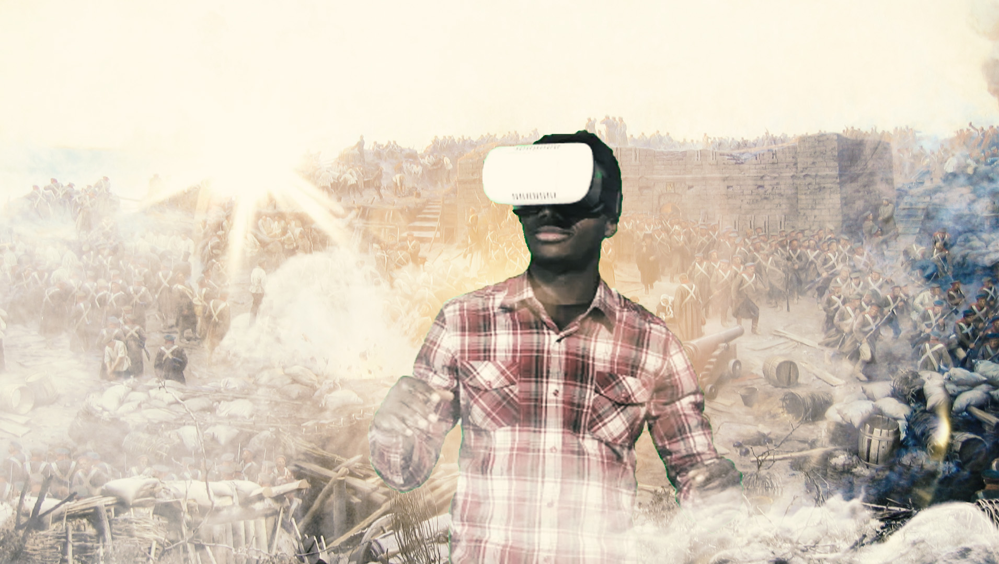
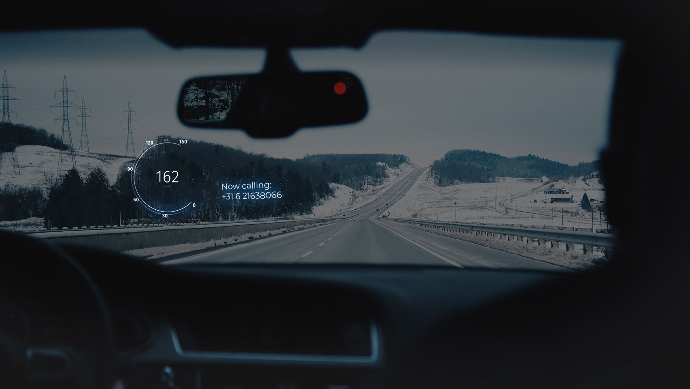
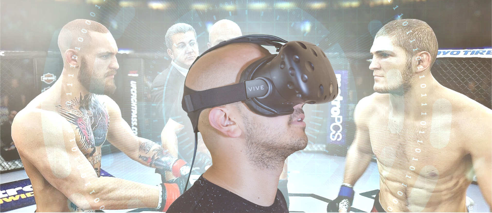
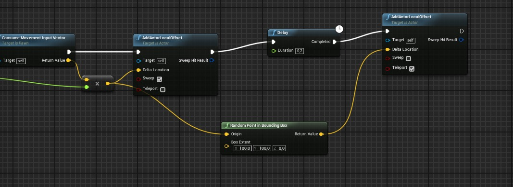

Assignment
3 Short AR / VR Concepts
Echte geschiedenisles
Op de middelbare school was mijn slechtste vak geschiedenis. Ik heb dit vak zo snel mogelijk laten vallen en hier nooit veel plezier in gehad. Tegenwoordig luister ik regelmatig Dan Carlin’s Hardcore History. Hij weet geschiedenis voor mij interessant te maken, ik luister het op de fiets of in de trein en de oorlog, de tijd, of het gevoel gaat voor mij leven. Ik zie de dingen voor mij, ik voel dezelfde emoties als dat de verdedigers tegen het rijk van Kahn gevoeld moeten hebben, een fantastische ervaring. Als ik op de middelbare school zo geschiedenisles gehad had, weet ik zeker dat ik het vak niet had laten vallen.
AR Dashboard
Je zit in de auto, op weg naar je werk, gaat je telefoon af. Mijn telefoon is in m’n auto altijd verbonden met bluetooth, en dus kan ik in de auto bellen zonder de telefoon aan te raken. Het enige nadeel is dat ik op het minischermpje rechts van m’n dashboard moet kijken om te zien wie er belt. Dat schermpje zit iets boven de versnellingspook en kost zo 1.5e seconden om te bekijken. Stel dat mijn dashboard geprojecteerd zou worden op de voorruit, dan is er nog genoeg ruimte voor een telefoonnummer. Er is ruimte voor alle meters, notificaties over wegversperringen, en kleine dingetjes zoals het telefoonnummer van degene die mij belt. Dit zou wat mij betreft ideaal zijn.
VR-MMA
Ik ben zelf niet de meest sportieve jongen, maar ik heb altijd al de ambitie gehad om iets met martial arts te doen. Toch vind ik de drempel iets te hoog om een vechtschool binnen te stappen en gelijk in het diepe gegooid te worden met Jiu Jitsu. Even thuis oefenen lijkt mij wel fijn, voor de nodige voorbereiding. Met de huidige HTC Vive zou een VR vechtspel goed te realiseren zijn, maar dan met de nadruk op de techniek en het sportieve van vechtsporten. Vechtspelletjes zijn er genoeg, maar goede trainingen over bewegingen, tactieken, die je recht voor je ziet, die bestaan nog niet.
Research
Ik volg al enkele jaren corridor digital op YouTube. Tot een paar jaar geleden werkte zij samen met Node, die sinds enkele jaren werkt aan de software Boneworks. Het is een framework om VR-games op te maken die gericht zijn op first-person games. Het programma heeft absurd goede tracking van de armen, handen, vingers, lichaam, de physics-engine is ongelofelijk goed, dit wordt hét framework voor first person VR-games in de komende 10 jaar. Ik volg de progressie van het project al 2 jaar, dus het is erg bijzonder om te zien hoe ver het project gekomen is. De interface is zeer intuïtief, en deze video waarin het programma ge-showcaset wordt is absoluut het kijken waard.
Unreal Assignment
In mijn virtuele wereld in Unreal Engine heb ik een simpel iets toegevoegd om voor meer interactiviteit te zorgen. De speler wordt constant random geteleporteerd binnen een bereik van 100 punten (X & Y). Dit is zover als mijn kennis van Unreal Engine gaat, ik heb het via de online documentatie voor elkaar gekregen.
Reflect
AR & VR heb ik van begin af aan een heel leuk onderwerp gevonden. Er is zo veel mogelijk! Het feit dat je een hele aparte wereld kunt maken opent heel veel creatieve mogelijkheden. Je kunt zeer veel gevoel creeëren in een spel of omgeving in een virtuele realiteit. Ik moet gelijk denken aan het spel Firewatch waar ik helemaal op ging in het karakter en de omgeving van het spel. Ik speelde dit spel niet in VR, maar het voelde wel alsof ik werkelijk als vuurwacht in een bos rondliep, een heel leuk en verassend gevoel. Ik zou erg graag iets in VR / AR willen maken, al heb ik wel een enige aversie van Unreal Engine. De graphics zijn er goed, maar de interface is erg omslachtig vergeleken met andere "game-builders" zoals Unity of Blender. In beide deze technologie-vormen zijn echter zoveel programma's te gebruiken dat ik mij daar niet erg druk om maak.